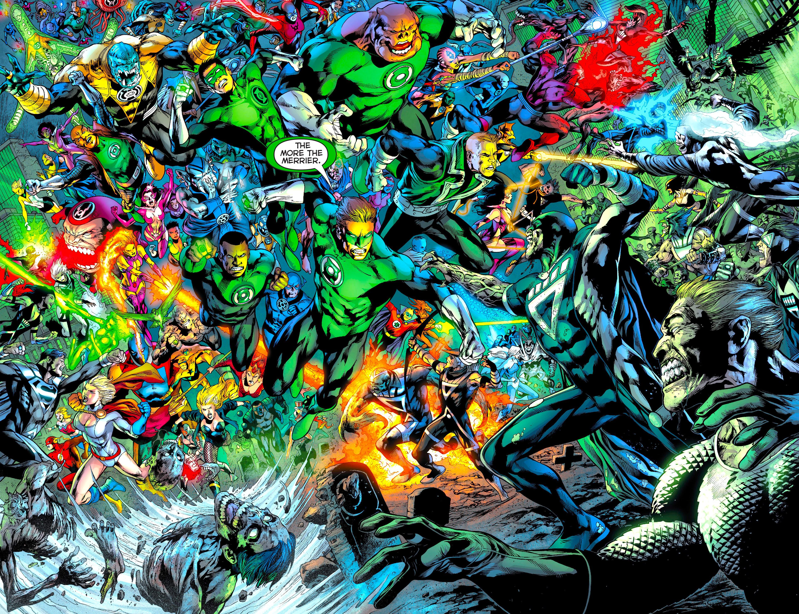
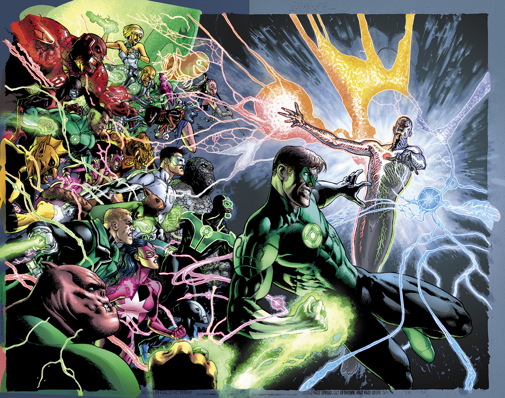
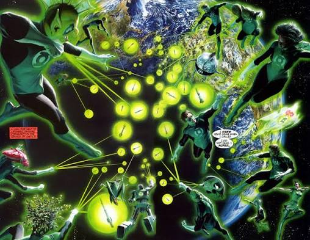
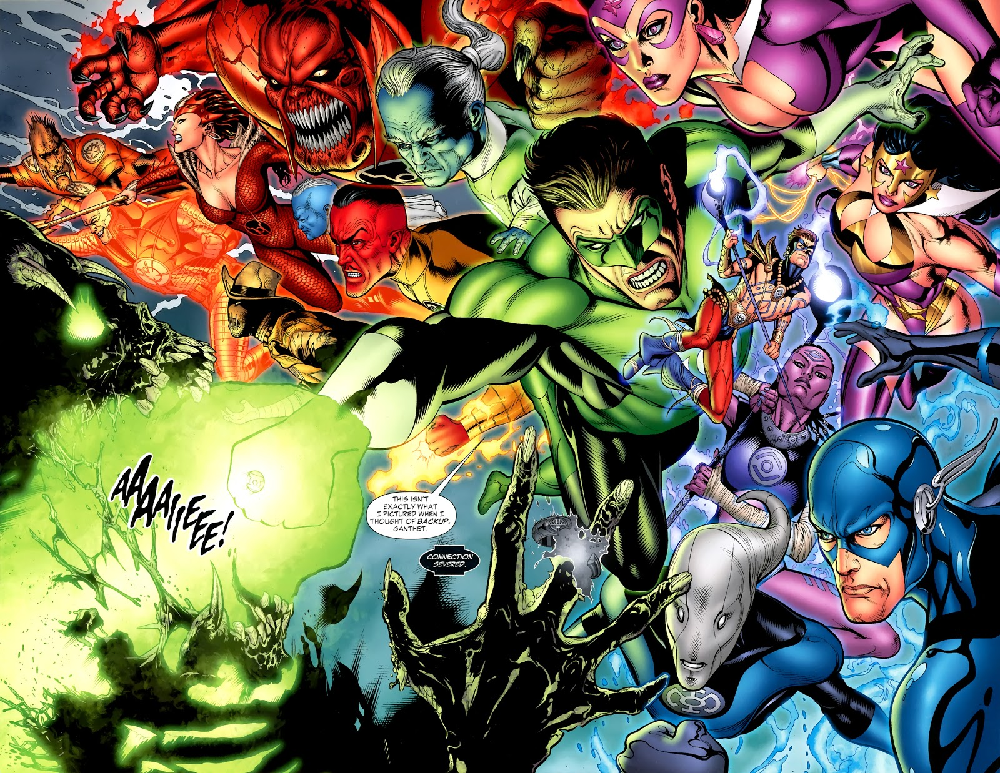

Much like many Green Lanterns of Earth, I was born and raised on the West Coast. A Los Angeles boy at heart, I take great pride from my city. However, nothing takes precedence over the Corps. I was chosen as the next Green Lantern initiate over a year ago today. Although the application process was long (planning an interview with the Guardians of the Universe is a little difficult), I finally managed to get in.
As I've been chosen to represent an organization as honorable as the Corps, it's for the best that I outline my strengths. I am a courageous adventurer at heart, often on my own path but still willing to compromise. I am honest and forthright, and I will never break an oath that I have made in the sanctity of others. I do sometimes feel that I can push myself a little to hard, but I never need more than a little bit of R&R to get right back into shape.
Prior to being selected as a Green Lantern, I was getting my bachelor's degree in Creative Writing at UC Riverside. I had never held a steady job before then, if only because of the hypocrisy and stuiff nature of Earth based organizations. I am actively searching for an Earth based hero team to join. It doesn't have to be Justice League level, but I believe I can bring a variety of things to the playing field. If you want to swim in a field of green baseball bats, don't hesitate to call.
• Saved galaxy from Spider Guild
• Toured for the "Book of Oa" musical in May 2026
• Experience with Green Lantern rings, batteries, and parasitic fear demons
• Responsible for opening and closing the local library doors
• etc etc
• Wrote emails for Lex Luthor and associates
• Fetched coffee for Lex Luthor and associates
• Boarded giant death mech to fight Superman for Lex Luthor and associates
• Saved Lexcorp $13.50 in tax write offs



